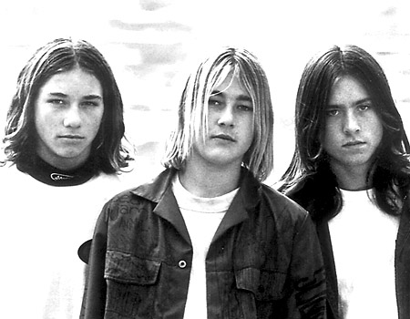
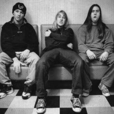

Silverchair were an Australian rock band, which formed in 1992 as Innocent Criminals in Merewether, Newcastle with the line-up of Ben Gillies on drums, Daniel Johns on vocals and guitars, and Chris Joannou on bass guitar. The group got their big break in mid-1994 when they won a national demo competition conducted by SBS TV show Nomad and ABC radio station, Triple J. The band was signed by Murmur, and were successful on the Australian and international rock stages.
During their career, Silverchair won more ARIA Music Awards than any other artist in history with 21 wins from 49 nominations. The band have also received six APRA Awards with Johns winning three songwriting awards at the 2008 ceremony. All five of their studio albums have debuted at number-one on the ARIA Albums Chart: Frogstomp (1995), Freak Show (1997), Neon Ballroom (1999), Diorama (2002) and Young Modern (2007). Three of the group's singles have reached number-one on the related ARIA Singles Chart: "Tomorrow" (1994), "Freak" (1997) and "Straight Lines" (2007).
Silverchair's alternative rock sound had evolved throughout their career, differing styles on specific albums steadily growing more ambitious over the years, from grunge on their debut to more recent work displaying orchestral and art rock influences. The songwriting and singing of Johns had evolved steadily while the band had developed an increased element of complexity. In 2003, following the release of Diorama, the band announced a hiatus, during which time members recorded with side projects The Dissociatives, The Mess Hall, and Tambalane. Silverchair were reunited at the 2005 Wave Aid concerts. In 2007, they released their fifth album, Young Modern, and played the Across the Great Divide tour with contemporaries Powderfinger. In May of 2011, Silverchair announced an indefinite hiatus. As of January 2018, Silverchair have sold 9 million albums worldwide.